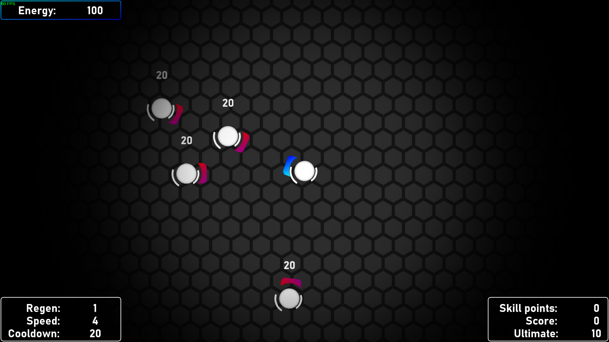

The Project Titan

Gameplay
Hra The Projekt Titan je napínavá rogue-like střílečka s pohledem shora. V této akční hře si převezmete kontrolu nad mocným titánem vybaveným omezeným zdrojem energie, která slouží jako vaše životy i jako munice. Vašeho titána si také můžete postupně vylepšovat za body získané ze zničených nepřátel. Hra je poměrně chytlavá, leč nemá žádnou možnost online multiplayeru. Ale i přes absenci multiplayeru je zde určitý způsob, jakým jsou hráči propojeni. Tím jsou Leaderboardy na stránce kokos.wz.cz. TPT byl původně vyvinut pro potřeby mých přijímacích zkoušek na Creative Hill Colage ve Zlíně. Hra také původně měla obsahovat kampaň, na tu však nezbyl čas, a proto nebyla do hry implementována.
Mechnika energie
Energie vašeho titána je klíčovým zdrojem sloužícím jako životní síla a munice pro ničivé zbraně. Každá vystřelená rána spotřebovává energii, což vás staví do neustálého boje o vyvážení útoku a obrany. Budete muset strategicky spravovat zásoby energie, abyste mohli uvolnit silné útoky a zároveň zajistili své vlastní přežití.
Technologie
Hra je celá dělána v herním enginu GameMaker Studio 1.2. Pracovat s tímto enginem jsem se naučil už jako malý, takže pro mne nebylo příliš obtížné poměrně rychle vytvořit hru bez toho, abych musel cokoliv hledat nebo se učit.
Propojení s webem
Hra je propojená s webovou stránkou kokos.wz.cz, která slouží jako jeden z možných způsobů, jak si hru zahrát. Také umožňuje porovnávat score v Leaderboardech. Na stránce si jednoduše vytvoříte účet a pustíte se do hry. Jakmile hra skončí, score se automaticky nahraje na Leaderboardy pod vaší přezdívkou.
Stellar Odyssey
Gameplay
Ve Stellar Odyssey se hráč vydává na nebezpečnou cestu vesmírem jako kapitán malého vesmírného plavidla. Toto dobrodružství, inspirované mou oblíbenou hrou Faster Than Light (FTL), kombinuje strategické rozhodování, intenzivní bitvy a to vše v náhodně generovaném vesmíru.
Technologie
Pro vývoj Stellar Odyssey jsem využil GameMaker Studio 1.2 stejně jako pro The Project Titan. Generovaný vesmír má zajišťovat, že žádný průchod hrou nebude stejný. Každý skok do nového sektoru přináší nová nebezpečí, jako jsou nepřátelští mimozemšťané, asteroidní pole nebo vraky lodí plné zdrojů potřebných pro hráčovo přežití Musíte pečlivě spravovat své omezené zdroje - množství paliva, oceli, jídla, pití, energie nebo životů jednotlivých částí lodi. Hlavní rozdíl od FTL měl být ve více survival povaze hry. FTL je spíše hrou žánru rogue-like, každá hra trvá nanejvýš pár hodin, zatímco jedna hra Stellar Odyssey může trvat desítky hodin. Jedním z důvodů, proč hra také byla delší, je, že souboje nejsou real-timové, na každý tah máte libovolné množství času, takže vás nic nenutí se co nejrychleji rozhodovat. To je ovšem balancováno větší obtížností soubojů.
Současný stav
Stellar Odyssey bylo vyvíjeno pro potřeby mých příjímacích zkoušek stejně jako The Project Titan. Na rozdíl od TPT jsem Stellar Odyssey nedotáhl do stavu, aby se dal opravdu plnohodnotně hrát. To bylo především kvůli mým omezeným zkušenostem v programování, leč nápad stále přetrvává a kdo ví - třeba se jednou dočkáme Stellar Odyssey v přepracované verzi, která už bude obsahovat opravdu vše, co má.
Elemental Tactics
Gameplay
Hra Elemental Tactics je poutavá počítačová karetní hra, která je podobná hře Hearthstone, ale představuje jedinečný herní mechanismus zaměřený na otáčení karet ve čtyřech různých směrech, abyste vytvořili různě silné kombinace karet.
Otáčení karet
V této strategické karetní bitvě si sestavujete balíček různorodých elementálních karet, z nichž každá představuje různé bytosti, kouzla a očarování. Vaším cílem je strategicky otáčet tyto karty, abyste aktivovali jejich schopnosti a vytvořili ničivé kombinace.
Tachnologie
Tato hra byla, stejně jako obě předchozí, vytvořena pomocí enginu GameMaker Studio 1.2. Celý grafický kabátek je stylizován do pixelartové grafiky. Hra se odehrává na virtuálním stole, který slouží jako pozadí pro karty, které hráči postupně vykládají do 4 linií (2 u hrače a 2 u nepřítele). Každá karta má čtyři směry, kterými může ukazovat. Podle toho poskytuje vedlejší kartě bonus k ůtoku, větší štít, redukci poškození či jiný efekt. Spojením síly několika karet může hráč docílit velmi silné kobinace, ale musí si dávat pozor, aby to stejné neudělal i nepřítel a tím vám nepřekazil vaše plány.
Současný stav
Bohužel stejně jako Stellar Odyssey, Elemental Tactics nikdy nebylo dokončeno. To bylo hlavně z důvodu složitosti systému kombinace jednotlivých karet. Velký počet kombinací byl pro nezkušeného programátora, jakým jsem byl já, velký problém. Avšak stejně jako u Stellar Odyssey nápad stále přetrvává a mé zkušenosti s programováním se poměrně hodně zlepšily, tak třeba jednoho dne...
Ostatní projekty
Ztraceno
Bohužel (možná naštěstí) většina z mých starých projektu je ztracena někde mezy stovkamy souborů na starém disku, který jsem již dlouho neotevřel, a proto je zde neuvádím.